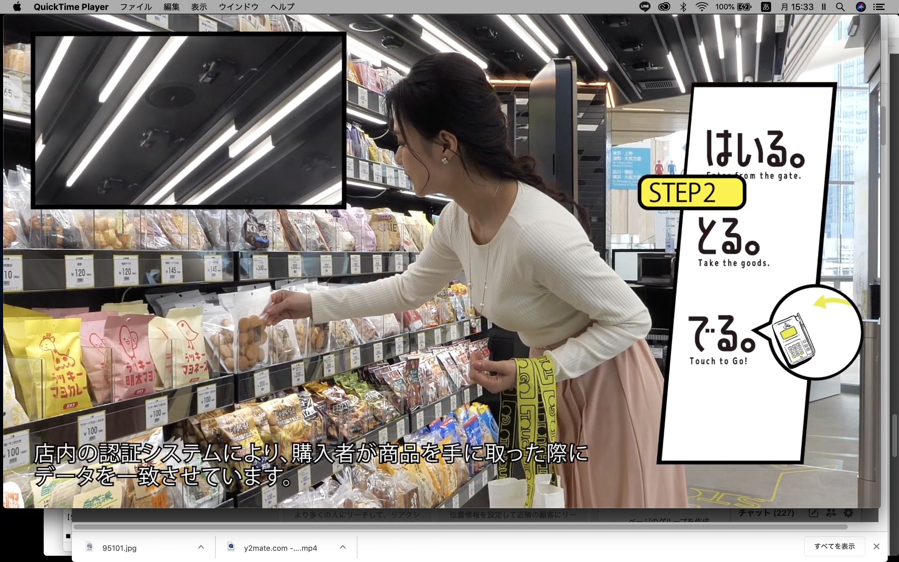

TOUCH TO GO


PROJECT INFORMATION
東日本JRスタートアップの「TOUCH TO GO」。企画、UI設計、デザインを担当した無人キオスクの実績です。
01 / 背景とテーマ
輪郭を与える
東日本JRスタートアップの「TOUCH TO GO」。企画、UI設計、デザインを担当した無人キオスクの実績です。
02 / SCHEMAの担当範囲
全体を整える
SCHEMAの担当範囲は、企画、UI設計、デザインです。
03 / 取り組みの視点
枠組みをひらく
新しい買い物の仕組みを、人が利用する接点から考える。無人キオスクというテーマに、UIとデザインで関わっています。